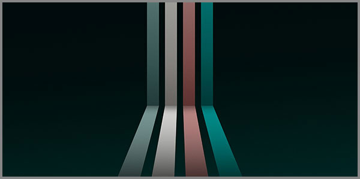

5. «Բաժանիր և Տիրիր» Աշխարհընկալման Բանաձևից Մինչև Դրա Դեգրադացիան, Իսկ Վերարտադրումը Որպես Հակաթույն
 |
Կա մի սկզբունք, որն անցնում է մարդկության ողջ պատմության միջով: Այն հնագույն է, ինչպես Շումերի զիկուրատները, և արդիական, ինչպես սոցիալական ցանցերի ալգորիթմները: Այն միաժամանակ արարչական է և կործանարար, ներդաշնակեցնող և պառակտող: Այդ սկզբունքը «Բաժանիր և տիրիր»-ն է:
Բայց ինչպե՞ս է ծնվել այս սկզբունքը: Արդյո՞ք այն միշտ եղել է չարի գործիք, թե՞ ժամանակին եղել է աշխարհը հասկանալու և կառուցելու միջոց:
Այստեղ կփորձեմ տալ այդ հարցերի պատասխանները, որոնք ցույց կտան, որ «Բաժանիր և տիրիր»-ը սկզբում եղել է 60-ական համակարգի բնական, արարչական դրսևորումը: Այն աշխարհընկալման բանաձև է եղել, որը թույլ էր տալիս ամբողջը բաժանել ներդաշնակ մասերի՝ առանց կոտորակների, առանց մնացորդների, առանց «անհասկանալի» թվերի: 60-ը, իր 12 բաժանարարներով, հենց այդ բանաձևի մաթեմատիկական մարմնացումն է:
Բայց ժամանակի ընթացքում այս բանաձևը դեգրադացվեց: Մարդկությունը 60-ականից անցավ 10-ականի, 10-ականից՝ 2-ականի: «Բաժանիր և տիրիր»-ը արարչական գործիքից վերածվեց մանիպուլյացիայի, պառակտման, իշխանության գործիքի: Այն, ինչ ժամանակին միավորում էր, սկսեց բաժանել:
Արդ պետք է գտնենք այդ ճանապարհը՝ ծնունդից մինչև դեգրադացիա: Եվ ամենակարևորը, այն առաջարկում է հակաթույն՝ վերադարձ դեպի 60-ական մտածողություն, դեպի բանաձևի արարչական իմաստ, դեպի միավորում:
«Բաժանիր և տիրիր»-ը մի բանաձև է, որը կառուցել, բայց և քանդել է աշխարհը:
«Բաժանիր և տիրիր» բանաձևի արարչական սկզբունքը
«Բաժանիր և տիրիր»: Այս արտահայտությունը լսելիս ժամանակակից մարդու մտքում անմիջապես ծնվում են բացասական ասոցիացիաներ: Քաղաքական մանիպուլյացիա, գաղութատիրություն, պառակտում, իշխանատենչություն: Սակայն այս սկզբունքի արմատները շատ ավելի խորն են, և դրանք ամենևին էլ կործանարար չեն եղել: Ընդհակառակը:
Նախքան քաղաքական գործիք դառնալը, «Բաժանիր և տիրիր»-ը եղել է ճանաչողության, աշխարհընկալման, տիեզերքի կառուցվածքը հասկանալու բանաձև: Եվ այդ բանաձևի մաթեմատիկական մարմնացումը եղել է 60-ական համակարգը:
Ինչու՞ 60-ը: Որովհետև 60-ը ամենափոքր թիվն է, որը բաժանվում է 1-ից 6-ի բոլոր թվերին: Ավելին, այն ունի 12 բաժանարար՝ 1, 2, 3, 4, 5, 6, 10, 12, 15, 20, 30, 60: Սա նշանակում է, որ 60-ը կարելի է «բաժանել» ամենատարբեր ձևերով՝ առանց կոտորակների, առանց մնացորդների, առանց «անհասկանալի» թվերի: Այս հատկությունը 60-ը դարձնում է իդեալական գործիք աշխարհը կառուցելու և կազմակերպելու համար:
Հենց այստեղ է ծնվում «Բաժանիր և տիրիր»-ի արարչական իմաստը: Շումերները, որոնց տրվել էր այս համակարգը, այն օգտագործեցին ոչ թե մարդկանց պառակտելու, այլ տիեզերքը ճանաչելու համար:
Նրանք շրջանը բաժանեցին 360 աստիճանի (6 × 60): Սա թույլ տվեց չափել երկինքը, կառուցել աստղագիտություն, նավարկել, ժամանակը բաժանեցին 60 րոպեի և րոպեն բաժանեցին 60 վայրկյանի: Սա թույլ տվեց կազմակերպել առօրյան, գյուղատնտեսությունը, ծեսերը: Տարին բաժանեցին 12 ամսվա (60-ի 1/5-ը): Սա թույլ տվեց հետևել եղանակներին: Օրը բաժանեցին 24 ժամի (12-ի կրկնապատիկը):
Այս ամենը «բաժանում» էր՝ հանուն «տիրելու»: Բայց «տիրել» նշանակում էր ոչ թե իշխել, այլ հասկանալ, կազմակերպել, ներդաշնակեցնել: Դա նույն սկզբունքն է, ինչ մենք տեսանք «5 և» գործում՝ 60 = 39 + 12 + 7 + 1 + 1: Ամբողջը բաժանված է ներդաշնակ մասերի, և այդ մասերը միասին կազմում են ամբողջը:
Սա «Բաժանիր և տիրիր»-ի արարչական, նախնական իմաստն է: Այն գործիք է, որը թույլ է տալիս ամբողջը տեսնել մասերի միջոցով և մասերը միավորել ամբողջի մեջ:
Բաժանիր, որ հասկանաս: Տիրիր, որ միավորես:
Մարմինը որպես 60-ական ապացույց
Եթե 60-ական համակարգը իսկապես տիեզերքի կառուցվածքային սկզբունքն է, ապա այն պետք է դրսևորվի ամենուրեք, այդ թվում՝ հենց մեր մարմնում: Եվ իրոք, մարդու մարմինը 60-ական համակարգի ամենահամոզիչ ապացույցներից մեկն է:
Վերցնենք արյան ճնշումը: Բժշկական գիտությունը սահմանել է իդեալական զարկերակային ճնշման ցուցանիշը՝ 120/70 մմ սնդիկի սյուն: Սա պարզապես թվեր չեն: 120-ը 12-ի տասնապատիկն է, իսկ 12-ը 60-ի 1/5-ն է: 70-ը 7-ի տասնապատիկն է, իսկ 7-ը 60-ական համակարգի մի մասն է (7 գույն, 7 հիմնական նոտա): Այսպիսով, 120/70-ը միավորում է 12-ը և 7-ը՝ 60-ական համակարգի երկու հիմնական բաղադրիչները:
Իսկ սրտի զարկը… նորմալ պայմաններում մարդու սիրտը բաբախում է րոպեում 60-64 անգամ: Սա 60-ից ավելի է մինչև 4 զարկով: Այս շեղումը կազմում է մոտ 6.6%, ինչը գտնվում է Ֆա-յի էֆեկտի սահմաններում(մինչև 6.66%): Այսինքն, մարդու սիրտը, իր բնականոն աշխատանքով, ապրում է Ֆա-յի էֆեկտի մեջ: Այն չի ձգտում կատարյալ 60-ի, այլ պահպանում է մի փոքր շեղում, որը նրան կենդանի է պահում:
Իսկ ի՞նչ կարելի է ասել աչքաչափի մասին: Այստեղ մենք ունենք մի զարմանալի պատմական փաստ, որը կարող է ծառայել որպես ապացույց:
Պատմությունը սկսվում է Հին Հռոմից: Հռոմեացիները, կառուցելով իրենց հայտնի ճանապարհները, օգտագործում էին կառքեր, որոնց անիվների միջև հեռավորությունը ստանդարտացված էր՝ մոտ հռոմեական 4 ոտնաչափ և 10 ունցիա, որը կազմում է 1435 մմ: Այս չափը որոշվել էր գործնական նկատառումներով՝ աչքաչափով, որը բավարար էր, որպեսզի երկու ձի կողք-կողքի լծվեին, և միաժամանակ կառքը կայուն լիներ:
Դարեր անց, երբ Անգլիայում սկսվեց արդյունաբերական հեղափոխությունը, հանքերում սկսեցին օգտագործել ռելսեր ձիաքարշ վագոնիկներով՝ հանքանյութ տեղափոխելու համար: Այս ռելսերի միջև հեռավորությունը վերցվեց հենց այդ նույն հին կառքերի ստանդարտից՝ 1435 մմ: Իսկ Երբ Ջորջ Սթիվենսոնը 1829 թվականին սկսեց կառուցել առաջին «Ռոքեթ» մակնիշի շոգեքարշերը, նա չփորձեց «հաշվել» կամ «հայտնագործել» նոր ստանդարտ: Նա պարզապես վերցրեց այն, ինչ արդեն կար հանքերում: Այդպես ծնվեց առաջին երկաթգծային ստանդարտը՝ 1435 մմ, որը արմատավորվեց ամբողջ Եվրոպայում:
Բայց 18-րդ դարում, Ռուսաստանի Ցար Պետրոս Առաջինը, ով հայտնի էր իր բարեփոխումներով, որոշեց կառուցել երկաթուղի, որը կգնա մինչև Եվրոպա: Այն պահին, երբ մասնագետները ներկայացրեցին նրան իրավիճակ, որ չունեն կոնկրետ չափ երկաթուղու կառուցումը սկսելու համար, իսկ այդ կառուցումը շտապ էր ու անհրաժեշտ, ցարը հիշողությամբ և աչքաչափով դուրս բերեց եվրոպական երկաթուղու չափը և ձեռքերով ցույց տալով այդ չափը բացականչեց. Այ այսքան է, որն էլ ընդունվեց որպես Ռուսական ստանդարտ և այդ չափը պարզվեց որ 1520 մմ է:
Հիմա եկեք նայենք այս թվերին 60-ական համակարգի աչքերով: 1435-ը, առաջին հայացքից, պատահական թիվ է: Բայց եթե մենք հիշենք Ֆա-յի էֆեկտը (թույլատրելի շեղումը մինչև 6.66%), ապա 1435-ը շատ մոտ է 1440-ին (60 × 24): Տարբերությունը ընդամենը 5 մմ է, կամ 0.35%: Սա Ֆա-յի էֆեկտի սահմաններում է:
Իսկ ի՞նչ կարելի է ասել ռուսական ստանդարտի մասին: 1520-ը, Ֆա-յի էֆեկտով, ձգտում է դեպի 1500 (60 × 25): Տարբերությունը 20 մմ է, կամ 1.33%: Սա նույնպես Ֆա-յի էֆեկտի սահմաններում է:
Ահա թե ինչ է տեղի ունեցել: Եվրոպական ստանդարտը, որը ձևավորվել է դարերի ընթացքում բնական ընտրությամբ, ձգտել է դեպի 1440 (60 × 24), որը մաքուր 60-ական թիվ է: Իսկ ռուսական ստանդարտը, որը ընտրվել է մեկ մարդու աչքաչափով, ով փորձել է վերարտադրել 1435-ը ձգտել է դեպի 1500 (60 × 25), որը մի փոքր շեղված է 1435-ից, ոչ այնքան հարմոնիկ, բայց էլի 60-ական թիվ է:
Իսկ ի՞նչ կարելի է ասել աչքի և աչքաչափի մասին այս պարագայում: Երկու դեպքում էլ մարդու աչքը ենթագիտակցորեն ձգտել է դեպի 60-ական ներդաշնակություն:
Սա վկայում է, որ 60-ը ներկառուցված է մեր ընկալման մեջ: Այս ամենը նշանակում է, որ մարդու մարմինը, իր ամենահիմնական ֆունկցիաներով, 60-ական համակարգի կենդանի ապացույցն է: Մենք չենք սովորել 60-ը, մենք այն կրում ենք մեր մեջ: Այն ներկառուցված է մեր սրտի զարկերի, մեր արյան ճնշման, մեր աչքի զգացողության մեջ:
Մարմինը չի սխալվում: Այն հիշում է 60-ը:
Դեգրադացիան որպես մտքի աղավաղում
Մենք տեսանք, թե ինչպես է «Բաժանիր և տիրիր» սկզբունքը ծնվել որպես արարչական, ներդաշնակեցնող ուժ: Մենք տեսանք, որ մարդու մարմինը, իր ամենահիմնական ֆունկցիաներով, ապացուցում է 60-ական համակարգի իրականությունը: Բայց եթե 60-ը այդքան բնական է, այդքան ներկառուցված է մեր մեջ, ապա ինչպե՞ս մենք հասանք նրան, որ այսօր ապրում ենք 10-ական, նույնիսկ 2-ական աշխարհում: Պատասխանը մեկ բառ է՝ դեգրադացիա:
Դեգրադացիան, ինչպես մենք սահմանել ենք, անցումն է ամբողջականից դեպի մասնատվածը, ներդաշնակից դեպի պարզունակը, 60-ից դեպի 10, ապա՝ 2: Սա միայն թվերի պատմություն չէ: Սա մարդկային մտքի, աշխարհընկալման, գիտակցության պատմություն է:
Երբ մարդկությունը հրաժարվեց 60-ական համակարգից և անցավ 10-ականին, դա արվեց հանուն պարզության: Մատների վրա հաշվելը ավելի հեշտ էր, քան 60-ական բաժանումները: 10-ը թվում էր ավելի «բնական», որովհետև մենք ունենք 10 մատ: Բայց այս անցումը գին ունեցավ: Մենք կորցրինք ամբողջը ներդաշնակ մասերի բաժանելու ունակությունը: Մենք սկսեցինք աշխարհը տեսնել ոչ թե որպես միասնական ամբողջություն, այլ որպես առանձին, չկապակցված մասերի հավաքածու:
Իսկ 10-ական համակարգը, իր հերթին, ծնեց 2-ականը: 0-ները և 1-երը, որոնց վրա հիմնված է ամբողջ ժամանակակից թվային աշխարհը, դարձավ մտածողության գերիշխող մոդել: Ամեն ինչ բաժանվեց «այո»-ի և «ոչ»-ի, «ճշմարիտ»-ի և «կեղծ»-ի, «սև»-ի և «սպիտակ»-ի: Մոխրագույնի երանգները, նրբերանգները, կիսատոնները, այն ամենը, ինչը կազմում էր 60-ական աշխարհի հարստությունը, կորսվեց:
Եվ ահա, հենց այստեղ է, որ «Բաժանիր և տիրիր»-ը կորցրեց իր արարչական իմաստը: Այն այլևս չէր ծառայում ամբողջը հասկանալուն: Այն դարձավ պառակտման, մանիպուլյացիայի, իշխանության գործիք:
Դեգրադացիան այն ճանապարհն է, որով 60-ը դարձավ 2, իսկ ներդաշնակությունը՝ պառակտում:
Պրոցեսորների ճարտարապետությունը՝ RISC, CISC և 2-ական փակուղին
Մենք հետևեցինք դեգրադացիայի ճանապարհին՝ 60-ից 10, 10-ից 2: Այս անկումն իր ամենացայտուն դրսևորումն է գտել ժամանակակից տեխնոլոգիաների սրտում՝ պրոցեսորներում: Այսօր ամբողջ թվային աշխարհը, որքան էլ բարդ և հզոր լինի, հիմնված է միայն երկու վիճակի վրա՝ 0 և 1: Սա 2-ական համակարգի բացարձակ թագավորություն է:
Սակայն, նույնիսկ այս 2-ական աշխարհի ներսում, մենք տեսնում ենք երկու տարբեր ճարտարապետական մոտեցումների պայքար, որոնք զարմանալիորեն արձագանքում են մեր քննարկած «բաժանիր և տիրիր» սկզբունքի երկու կողմերին:
RISC (Reduced Instruction Set Computer). Բաժանիր, որ հասկանաս:
RISC պրոցեսորները, որոնք լայնորեն օգտագործվում են սմարթֆոններում և պլանշետներում, կառուցված են պարզության սկզբունքով: Նրանց հրահանգների հավաքածուն փոքր է, ամեն մի հրահանգ կատարում է մի պարզ գործողություն, և այդ գործողությունները կատարվում են շատ արագ: Սա նման է 60-ական համակարգի «բաժանիր» սկզբունքին՝ բարդ խնդիրը բաժանվում է պարզագույն, ներդաշնակ քայլերի, որոնք հեշտ է կառավարել: RISC-ը «բաժանում է» խնդիրը, որպեսզի «տիրի» դրան արագ և արդյունավետ:
CISC (Complex Instruction Set Computer). Տիրիր հզորությամբ:
CISC պրոցեսորները, որոնք ավելի տարածված են անհատական համակարգիչներում և սերվերներում, գնում են հակառակ ճանապարհով: Նրանք ունեն բարդ, հզոր հրահանգների համակարգեր, որոնք կարող են մեկ գործողությամբ կատարել բազմաթիվ քայլեր: Սա նման է 10-ական համակարգի «ուժային» մոտեցմանը՝ մեծ, հզոր միավորներ, որոնք փորձում են միանգամից «տիրել» խնդրին: Սա ավելի շատ նման է «Բաժանիր և տիրիր»-ի դեգրադացված, մանիպուլյատիվ ձևին:
Բայց ահա թե որտեղ է թաքնված ողբերգությունը: Անկախ նրանից, թե որ ճարտարապետությունն է օգտագործվում, և՛ RISC-ը, և՛ CISC-ը, ի վերջո, աշխատում են 2-ական համակարգում: Նրանք երկուսն էլ փակված են 0-ների և 1-երի աշխարհում: Սա նշանակում է, որ որքան էլ մենք փորձենք «բաժանել» կամ «տիրել», մենք դա անում ենք մի համակարգում, որն ի սկզբանե սահմանափակ է, պարզունակ, դեգրադացված:
2-ական համակարգը դարձել է մի փակուղի, որից դուրս գալու համար անհրաժեշտ է նոր պարադիգմ: Եվ այդ նոր պարադիգմը, ինչպես ցույց է տալիս մեր ամբողջ աշխատանքը, 60-ական համակարգն է:
Պրոցեսորները, որոնք կառավարում են աշխարհը, փակված են 2-ական բանտում:
Քաղաքականության թույնը
Մենք տեսանք, թե ինչպես «Բաժանիր և տիրիր» սկզբունքը ծնվեց որպես արարչական գործիք, ինչպես այն դեգրադացվեց թվային համակարգի անկման հետ, և ինչպես նույնիսկ ամենաառաջավոր տեխնոլոգիաները մնացին փակված 2-ական փակուղում: Սակայն այս սկզբունքի ամենակործանարար կիրառումը տեղի ունեցավ ոչ թե տեխնոլոգիայում, այլ քաղաքականության մեջ:
«Divide et impera» (Բաժանիր և տիրիր): Այս լատիներեն արտահայտությունը վերագրվում է Հռոմեական կայսրությանը: Հռոմեացիները, որոնք կառուցեցին պատմության ամենամեծ կայսրություններից մեկը, հիանալի հասկանում էին մի պարզ ճշմարտություն. միավորված թշնամին վտանգավոր է, բաժանվածը՝ անզոր: Եվ նրանք դարձրին այս սկզբունքը իրենց կայսերական քաղաքականության հիմքը:
Ինչպե՞ս էր դա աշխատում: Հռոմեացիները նվաճում էին մի տարածք, բայց հետո փոխանակ ձուլեին տեղի ցեղերին, նրանք աջակցում էին մեկ ցեղին մյուսի դեմ, տալիս էին արտոնություններ որոշ խմբերի, սրում էին հին հակասությունները: Արդյունքում, նվաճված ժողովուրդներն այնքան զբաղված էին միմյանց դեմ պայքարով, որ երբեք չէին միավորվում Հռոմի դեմ: Սա «Բաժանիր և տիրիր»-ի դասական, քաղաքական կիրառումն էր:
Բայց Հռոմը միայն սկիզբն էր: Այս նույն սկզբունքը դարեր շարունակ օգտագործվել է բոլոր գաղութատիրական տերությունների կողմից: Բրիտանական կայսրությունը Հնդկաստանում, Ֆրանսիան Աֆրիկայում, բոլորը կիրառում էին «բաժանիր և տիրիր»-ը` պառակտելով տեղական ցեղերին, կրոնական խմբերին, էթնիկ համայնքներին: Սա թույլ էր տալիս փոքրաթիվ գաղութարարներին կառավարել հսկայական տարածքներ և բազմամիլիոնանոց ժողովուրդներ:
Եվ ահա, 21-րդ դարում, այս սկզբունքը չի անհետացել: Այն պարզապես փոխել է իր ձևը: Այսօր «բաժանիր և տիրիր»-ը գործում է սոցիալական ցանցերի ալգորիթմների միջոցով: Այս ալգորիթմները, որոնք նախագծված են մեր ուշադրությունը գրավելու և պահելու համար, մեզ ցույց են տալիս միայն այն, ինչը մեզ դուր է գալիս: Դրանք ստեղծում են «տեղեկատվական պղպջակներ», որտեղ մենք լսում ենք միայն մեզ նմաններին և երբեք չենք հանդիպում այլընտրանքային կարծիքների: Արդյունքում, հասարակությունը մասնատվում է, բևեռացվում է, և մարդիկ դադարում են լսել միմյանց: Սա թվային դարաշրջանի «բաժանիր և տիրիր»-ն է՝ անտեսանելի, նուրբ, բայց չափազանց արդյունավետ:
Այսպիսով, մի սկզբունք, որը ժամանակին ծառայում էր տիեզերքը հասկանալուն, դարերի ընթացքում վերածվեց մանիպուլյացիայի ամենահզոր գործիքի:
Քաղաքականությունը վերցրեց 60-ի ներդաշնակությունը և դարձրեց այն 2-ի պառակտում:
Բանաձևի վերարտադրումը որպես Հակաթույն
Մենք անցանք մի ամբողջ ճանապարհ: Տեսանք «Բաժանիր և տիրիր» սկզբունքի ծնունդը՝ որպես 60-ական ներդաշնակության գործիք: Տեսանք նրա դեգրադացիան՝ թվային, տեխնոլոգիական, քաղաքական: Հասանք մի կետի, որտեղ այս սկզբունքը, որ ժամանակին կառուցում էր աշխարհը, այսօր օգտագործվում է այն քանդելու համար:
Բայց եթե կա թույն, ապա պետք է լինի նաև հակաթույն: Եթե կա հիվանդություն, ապա պետք է լինի նաև բուժում: Եվ այդ հակաթույնը, որքան էլ զարմանալի թվա, հենց նույն սկզբունքի վերարտադրումն է՝ իր արարչական, նախնական իմաստով:
Ի՞նչ է նշանակում «բաժանիր և տիրիր» իր արարչական իմաստով: Դա նշանակում է. բաժանիր ամբողջը ներդաշնակ մասերի, որպեսզի հասկանաս այն, և ապա միավորիր այդ մասերը, որպեսզի ունենաս, տիրես ամբողջին: Սա 60-ական համակարգի էությունն է: 60-ը կարելի է բաժանել իր 12 բաժանարարներին, և այդ բոլոր մասերը միասին նորից կազմում են 60-ը: Սա «բաժանիր և տիրիր» է առանց կորստի, առանց պառակտման, առանց մանիպուլյացիայի:
Իսկ ի՞նչ է նշանակում «վերարտադրում»: Դա նշանակում է, որ այս սկզբունքը չպետք է մնա միայն տեսություն: Այն պետք է դառնա գործողություն: Այն պետք է կիրառվի կրթության մեջ, քաղաքականության մեջ, տեխնոլոգիայի մեջ, առօրյա կյանքում:
Ինչպե՞ս:
Կրթության մեջ. Սովորեցնել մարդկանց տեսնել ամբողջական պատկերը, այլ ոչ թե միայն մասնատված փաստերը: Սովորեցնել 60-ական մտածողություն, որը միավորում է տարբեր առարկաները և ձևավորում է մեկ ամբողջական աշխարհայացք:
Քաղաքականության մեջ. Հրաժարվել պառակտման և մանիպուլյացիայի մարտավարությունից: Փնտրել միավորող գաղափարներ, այլ ոչ թե բաժանող: Կառուցել կամուրջներ, այլ ոչ թե պատեր: Տեխնոլոգիայում. Դուրս գալ 2-ական փակուղուց: Ստեղծել նոր համակարգեր, որոնք հիմնված են 60-ական սկզբունքների վրա, որոնք թույլ են տալիս ավելի շատ նրբերանգներ, ավելի շատ երանգներ, ավելի շատ ներդաշնակություն:
Առօրյա կյանքում. Կիրառել «բաժանիր և տիրիր»-ը սեփական մտքերի, զգացմունքների, հարաբերությունների վրա: Բաժանել բարդ խնդիրները փոքր, լուծելի մասերի: Միավորել ցրված մտքերը մեկ հստակ նպատակի շուրջ:
Սա է հակաթույնը: Ոչ թե մերժել «Բաժանիր և տիրիր»-ը, այլ վերադարձնել նրան իր արարչական իմաստը: Ոչ թե պայքարել սկզբունքի դեմ, այլ վերարտադրել այն իր մաքուր, 60-ական ձևով:
Հակաթույնը թույնի մեջ է: Պարզապես պետք է վերադարձնել նրա 60-ական էությունը:
Բանաձևի վերագտնված արժեքով պայմանավորված վերջաբանը
Մենք սկսեցինք մի սկզբունքից, որը թվում էր պարզ, գրեթե բանական: «Բաժանիր և տիրիր»: Երկու բառ, որոնց մեջ ամփոփված է մարդկության ողջ պատմությունը՝ արարումից մինչև կործանում, ներդաշնակությունից մինչև պառակտում, 60-ից մինչև 2: Մենք տեսանք, որ այս սկզբունքը ծնվել է ոչ թե որպես չարի գործիք, այլ որպես աշխարհը ճանաչելու բանաձև: Շումերները, որոնց տրվել էր 60-ական համակարգը, այն օգտագործեցին տիեզերքը չափելու, ժամանակը կազմակերպելու, քաղաքակրթություն կառուցելու համար: Նրանց համար «բաժանիր» նշանակում էր «հասկացիր», իսկ «տիրիր»՝ «միավորիր»:
Մենք տեսանք, որ մարդու մարմինը ինքնին 60-ական է: Մեր արյան ճնշումը (120/70), մեր սրտի զարկը (60-64), մեր աչքի զգացողությունը, այս ամենը վկայում են, որ 60-ը ներկառուցված է մեր էության մեջ: Մենք չենք սովորել 60-ը, մենք այն կրում ենք:
Մենք տեսանք, թե ինչպես այս սկզբունքը դեգրադացվեց: 60-ից անցանք 10-ի, 10-ից՝ 2-ի: Թվային համակարգի անկումը արտացոլեց մտքի անկումը: Ամբողջականությունը փոխարինվեց մասնատվածությամբ, ներդաշնակությունը՝ պառակտմամբ: «Բաժանիր և տիրիր»-ը դարձավ մանիպուլյացիայի, այլ ոչ թե ճանաչողության գործիք:
Մենք տեսանք, թե ինչպես նույնիսկ ամենաառաջավոր տեխնոլոգիաները՝ պրոցեսորները, մնացին փակված 2-ական փակուղում: RISC-ը և CISC-ը, չնայած իրենց տարբերություններին, երկուսն էլ աշխատում են 0-ների և 1-երի աշխարհում: Սա ցույց է տալիս, որ տեխնոլոգիական առաջընթացը, առանց գիտակցության փոփոխության, միայն խորացնում է դեգրադացիան:
Մենք տեսանք, թե ինչպես քաղաքականությունը վերցրեց այս սկզբունքը և դարձրեց այն թույն: Հռոմից մինչև գաղութատիրություն, գաղութատիրությունից մինչև սոցիալական ցանցեր, «բաժանիր և տիրիր»-ը դարձավ ժողովուրդներին, համայնքներին, անհատներին իրար դեմ հանելու ամենաարդյունավետ միջոցը:
Բայց մենք նաև տեսանք, որ կա հակաթույն: Եվ այդ հակաթույնը հենց նույն սկզբունքի վերարտադրումն է՝ իր արարչական, 60-ական իմաստով: Վերադարձ դեպի ամբողջականություն: Վերադարձ դեպի ներդաշնակություն: Վերադարձ դեպի 60: Սա է ուղերձը:
«Բաժանիր և տիրիր»-ը կարող է լինել և՛ թույն, և՛ հակաթույն: Ամեն ինչ կախված է նրանից, թե ինչպես ենք մենք այն օգտագործում: Եթե մենք այն օգտագործում ենք պառակտելու, մանիպուլյացիայի ենթարկելու, իշխելու համար, ապա դա թույն է: Եթե մենք այն օգտագործում ենք հասկանալու, միավորելու, ներդաշնակեցնելու համար, ապա դա հակաթույն է:
Ընտրությունը մերն է: Բաժանիր և տիրիր: Մի սկզբունք, երկու ճանապարհ: 60-ը սպասում է:
«Մենք կառուցում ենք կամուրջներ այնտեղ, ուր մյուսները տեսնում են միայն անդունդներ։»
© 2026 Մոնումենտալ Կամուրջ: Այս կայքի բովանդակությամբ կարող եք ազատորեն կիսվել համացանցում՝ հղում տալով սկզբնաղբյուրին: Տպելու, տպագրելու կամ գիրք կազմելու միջոցով, կամ այլ ֆիզիկական ձևով և որևէ տեխնոլոգիական կրիչով տարածելը առանց հեղինակի գրավոր համաձայնության արգելվում է: Գիտական, կրթական կամ ստեղծագործական աշխատանքներում մեջբերումները թույլատրելի են պայմանով, որ պարտադիր պետք է նշվի կոնկրետ էջի ամբողջական հասցեն (URL) և աշխատության վերնագիրը: Առանց հեղինակի գրավոր համաձայնության՝ արգելվում է նաև կայքի նյութերի թարգմանությունը որևէ լեզվով և դրանց տարածումը այլ լեզուներով: